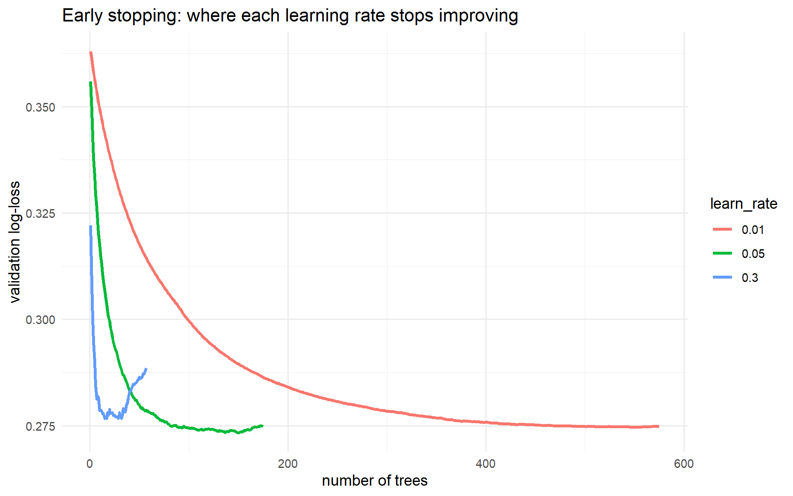
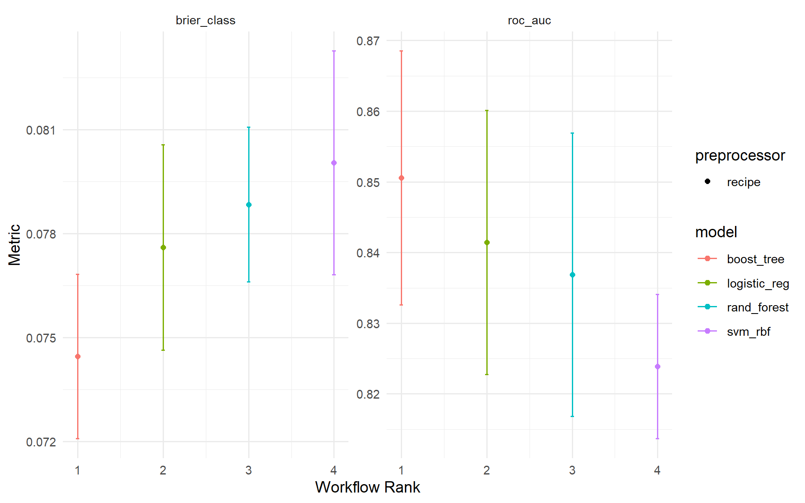
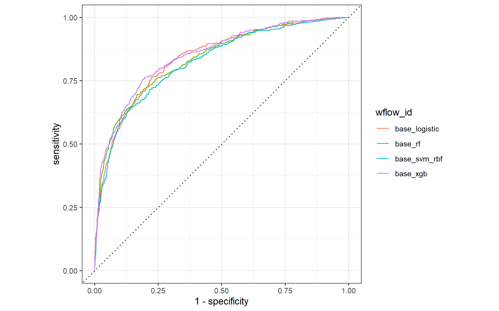

# WHERE WE ARE ---------------------------------------------------------------------------------------------
# T1 pipeline + baseline (R/prep_nhms.R), T2 random forest, T3 SVM - all scored on the same folds with the same
# metrics, so they are comparable. NEW TODAY: the third family, gradient boosting with XGBoost, and then the
# BAKE-OFF: logistic vs RF vs SVM vs XGBoost in one workflow_set() on dm_folds, saved to outputs/ for later.
source("R/prep_nhms.R")
library(future)
plan(multisession, workers = max(1, parallel::detectCores() - 1))
dir.create("outputs", showWarnings = FALSE)Tutorial 4 · Gradient boosting with XGBoost — and the bake-off
Session 5 · Day 2, 09.15–10.30 · Slides 05
0 · Start
1 · Boosting in one paragraph
Note
A random forest grows deep trees in parallel and averages them. Boosting grows shallow trees in sequence, each one fitted to what the ensemble so far gets wrong. Start with a trivial prediction (the log-odds of the prevalence). Compute, for every person, how wrong and in which direction — for classification that is the gradient of the log-loss, which for each person is simply observed − predicted probability. Fit a small tree to those residuals. Add it to the ensemble, shrunk by a learning rate. Repeat for hundreds of rounds. Each new tree is a step downhill on the loss function — gradient descent in the space of trees — which is the same idea that trains neural networks this afternoon. XGBoost is gradient boosting with serious engineering: a regularised objective (λ on leaf weights, γ to prune splits that do not pay for themselves), split finding on quantile sketches, a learned default direction for missing values, row and column subsampling, and multithreading.
boost_tree() |
xgboost | Meaning | Start here |
|---|---|---|---|
trees |
nrounds | boosting rounds | 500 with early stopping, or tune |
learn_rate |
eta | step size | 0.01–0.1 |
tree_depth |
max_depth | depth of each weak learner | 3–6 |
min_n |
min_child_weight | minimum (weighted) people per leaf | 10–30 |
loss_reduction |
gamma | minimum gain to make a split | 0–1 |
sample_size |
subsample | row fraction per tree | 0.7–1 |
mtry |
colsample_bynode | columns per split (counts = FALSE → a proportion) |
0.5–1 |
XGBoost needs numeric predictors, so the recipe must dummy-code the factors (dm_rec does). Scaling is irrelevant to trees but harmless, so one recipe serves all four families.
2 · “Just use the defaults” vs a gentle setting
xgb_default <- boost_tree(trees = 500, learn_rate = 0.3, tree_depth = 6) |> # xgboost's own defaults
set_engine("xgboost") |> set_mode("classification")
xgb_gentle <- boost_tree(trees = 500, learn_rate = 0.03, tree_depth = 3, min_n = 20,
sample_size = 0.8, mtry = 0.7, loss_reduction = 1) |>
set_engine("xgboost", counts = FALSE) |> set_mode("classification")
set.seed(2026)
xgb_two <- workflow_set(preproc = list(base = dm_rec), models = list(default = xgb_default, gentle = xgb_gentle)) |>
workflow_map("fit_resamples", resamples = dm_folds, metrics = cls_metrics, seed = 2026)
collect_metrics(xgb_two) |> filter(.metric %in% c("roc_auc", "brier_class")) |> select(wflow_id, .metric, mean, std_err)Same algorithm, same data, a visible AUC gap — purely from the settings. Boosting is far more sensitive to its hyperparameters than a forest. “Which setting is best?” is an empirical question; Tutorial 5 lets the computer search instead of guessing.
3 · Learning rate and number of trees trade off: early stopping
Hold out 20 % of each training set as a validation slice, let XGBoost watch the validation log-loss after every tree, and stop when it has not improved for 25 rounds.
fit_with_stop <- function(lr) {
spec <- boost_tree(trees = 2000, learn_rate = lr, tree_depth = 3, min_n = 20, stop_iter = 25) |>
set_engine("xgboost", validation = 0.2) |>
set_mode("classification")
set.seed(2026)
workflow(dm_rec, spec) |> fit(dm_train) |> extract_fit_engine()
}
# the evaluation log lives in different places in xgboost 1.x and >= 2.x; this reads both
eval_log <- function(booster) {
log <- attributes(booster)$evaluation_log
if (is.null(log)) log <- tryCatch(booster$evaluation_log, error = function(e) NULL)
as_tibble(log)
}
curves <- purrr::map_dfr(c(0.3, 0.05, 0.01), \(lr) fit_with_stop(lr) |> eval_log() |> mutate(learn_rate = lr))
curves |>
ggplot(aes(iter, validation_logloss, colour = factor(learn_rate))) +
geom_line(linewidth = 1) +
labs(x = "number of trees", y = "validation log-loss", colour = "learn_rate",
title = "Early stopping: where each learning rate stops improving") +
theme_minimal()
curves |> group_by(learn_rate) |> summarise(best_iter = iter[which.min(validation_logloss)], best_logloss = min(validation_logloss))A high learning rate reaches its minimum in a few dozen trees and then overfits; a small one takes hundreds of trees to get there and ends lower. Rule: fix a learning rate in 0.01–0.1, then let early stopping or cross-validation choose the number of trees — do not tune both freely.
4 · XGBoost handles missing values itself
Every split learns a default direction for rows where the splitting variable is NA. So XGBoost can take the data without imputation — occasionally a better choice, because “missing” is then free to carry information (people who skipped the weight question may differ from those who did not).
rec_native_na <- recipe(undx_dm ~ ., data = dm_train) |>
step_dummy(all_nominal_predictors()) |> # NA in a factor becomes NA in every dummy column - xgboost copes
step_zv(all_predictors())
set.seed(2026)
xgb_na <- workflow_set(preproc = list(imputed = dm_rec, native_na = rec_native_na), models = list(xgb = xgb_gentle)) |>
workflow_map("fit_resamples", resamples = dm_folds, metrics = cls_metrics, seed = 2026)
collect_metrics(xgb_na) |> filter(.metric %in% c("roc_auc", "brier_class")) |> select(wflow_id, .metric, mean, std_err)Within noise here (7 % MAR missingness). Keep imputation when the same recipe must also serve a GLM, an SVM or a network — they cannot cope with NA.
5 · The bake-off: four families, same folds, one object
model_zoo <- list(
logistic = logistic_reg() |> set_engine("glm"),
rf = rand_forest(trees = 500, mtry = 6, min_n = 10) |> set_engine("ranger") |> set_mode("classification"),
svm_rbf = svm_rbf(cost = 1, rbf_sigma = 0.005) |> set_engine("kernlab") |> set_mode("classification"),
xgb = xgb_gentle
)
bakeoff <- workflow_set(preproc = list(base = dm_rec), models = model_zoo)
bakeoffset.seed(2026)
bakeoff_res <- bakeoff |>
workflow_map("fit_resamples", resamples = dm_folds, metrics = cls_metrics, seed = 2026, verbose = TRUE,
control = control_resamples(save_pred = TRUE))
rank_results(bakeoff_res, rank_metric = "roc_auc", select_best = TRUE) |>
filter(.metric %in% c("roc_auc", "pr_auc", "brier_class")) |>
select(wflow_id, .metric, mean, std_err, rank)autoplot(bakeoff_res, metric = c("roc_auc", "brier_class")) + theme_minimal()
This plot is the honest answer to “which model should I use?” — and the honest answer on this data is “three of them are within one standard error of each other”. When that happens, choose on everything except AUC:
| Criterion | Logistic | Random forest | XGBoost | SVM |
|---|---|---|---|---|
| Discrimination (tabular) | good | very good | best, tuned | good |
| Calibration out of the box | good | fair (shrinks to the middle) | fair | poor (Platt) |
| Interpretability | coefficients | importance | importance | none |
| Training / prediction speed | instant | fast / slower | fast / fast | slow (n²) / fast |
| Handles missing natively | no | no (ranger) | yes | no |
| Tuning sensitivity | low | low | high | high |
| Deployable as a paper score | yes | no | no | no |
One ROC curve per model, from the out-of-fold predictions:
collect_predictions(bakeoff_res) |>
group_by(wflow_id) |>
roc_curve(undx_dm, .pred_Yes) |>
autoplot()
saveRDS(bakeoff_res, "outputs/t04_bakeoff_res.rds") # kept so you can reload it without re-running (nothing later requires it)Your turn (15 min)
Solution A
boosters <- list(
gentle = xgb_gentle,
slow_deep = boost_tree(trees = 1000, learn_rate = 0.01, tree_depth = 6, min_n = 10) |> set_engine("xgboost") |> set_mode("classification"),
stumps = boost_tree(trees = 1000, learn_rate = 0.05, tree_depth = 1, min_n = 20) |> set_engine("xgboost") |> set_mode("classification"),
fast = boost_tree(trees = 200, learn_rate = 0.3, tree_depth = 3, min_n = 20) |> set_engine("xgboost") |> set_mode("classification")
)
set.seed(2026)
boost_res <- workflow_set(preproc = list(base = dm_rec), models = boosters) |>
workflow_map("fit_resamples", resamples = dm_folds, metrics = cls_metrics, seed = 2026)
rank_results(boost_res, rank_metric = "roc_auc", select_best = TRUE) |>
filter(.metric %in% c("roc_auc", "brier_class")) |> select(wflow_id, .metric, mean, std_err)stumps (depth-1 trees = an additive model) usually does surprisingly well — most of the signal is additive — but loses a little to depth 2–3, which can express the family-history × BMI interaction. fast overfits. Slow and deep is not better than gentle and costs four times the time.
Solution B
pred_names <- dm_rec |> prep() |> bake(new_data = NULL) |> select(-undx_dm) |> names()
mono <- as.integer(pred_names == "age") # one entry per predictor column, in recipe order: +1 for age, 0 for the rest
# NB: splice the vector in with !!mono. Resampling runs on parallel workers, and they do not have `mono`
# in scope - set_engine() would otherwise just store the *name* `mono` and each worker fails with
# "object 'mono' not found". !!mono embeds the actual integer vector in the spec.
xgb_mono <- boost_tree(trees = 500, learn_rate = 0.03, tree_depth = 3, min_n = 20) |>
set_engine("xgboost", monotone_constraints = !!mono) |> set_mode("classification")
set.seed(2026)
mono_res <- fit_resamples(workflow(dm_rec, xgb_mono), dm_folds, metrics = cls_metrics)
collect_metrics(mono_res) |> filter(.metric %in% c("roc_auc", "brier_class"))Performance is essentially unchanged (the data already obey the constraint except at the very oldest ages, where the simulated risk falls slightly — survivorship), but the model is now guaranteed to behave sensibly on extrapolation, which is worth a lot when a clinician looks at a partial-dependence plot.
What to remember
- Boosting = sequential error-correction; XGBoost = boosting plus regularisation and engineering.
- Learning rate and number of trees trade off; fix one, let early stopping or CV choose the other.
- Much more sensitive to settings than a forest — the reason Tutorial 5 exists.
workflow_set()+workflow_map()is how you compare families without copy-paste and without cheating.- When models tie within one SE, choose on calibration, interpretability, speed and deployability.
Next: Tutorial 5 — resampling and tuning (Session 6, 10.50).